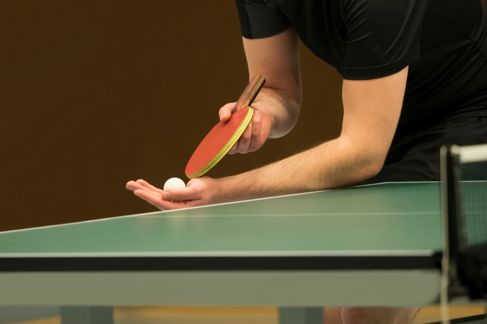

Prima mea pasiune a fost tenisul de masa. Este un sport individual
in care trebuie sa te provoci singur mai mult, sa iti folosesti
gandirea, atitudinea si echilibrul pentru a castiga. Acesta este
sportul complet si il practic cu foarte mare placere.
